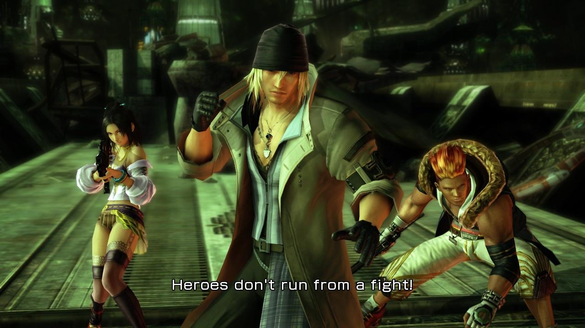
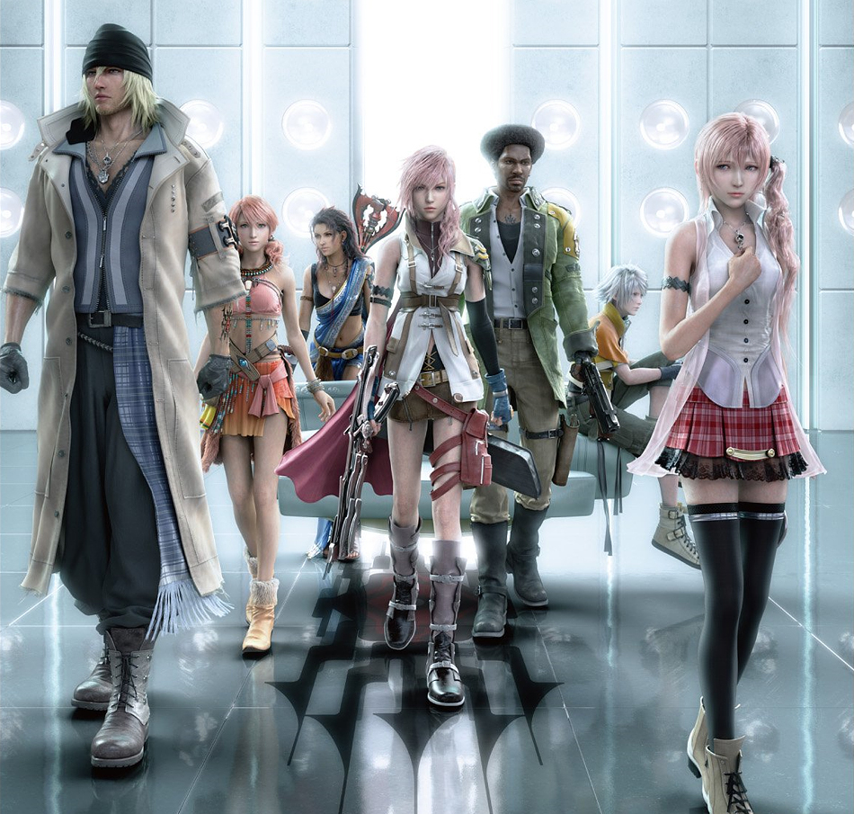

Background
|  |
| Rebel Group Team NORA |
The story is centered around the plight of a small group of people, some strangers, some not. A woman calling herself Lightning is the main character of the game. She has limited control over gravity by use of technology which makes the magic of the world usable by humans, commonly known as "manadrive." She specializes in collapsible weapons which can transform from a sword into a semi-automatic rifle.
The game is set in two sister worlds - Cocoon and Pulse. The beginning of the game takes place in the technologically advanced upper-world called Cocoon. Later on the player travels to the apparently much larger, untamed lower-world of Pulse. They are two separate planetoids, with a long history of paranoia and bloody warfare against the other. Humans are forbidden from traveling to or from Cocoon by the government, making it an enclosed society ruled by fal'Cie -- god-like beings who assign a human to govern Cocoon's citizens. However, there also exist fal'Cie from Pulse who turn humans into l'Cie (pronounced as Luh-See). These people are branded with a symbol somewhere on their body, given the ability to use magic, and given a single task known as a 'focus.'
If they carry out their focus and complete the task the fal'Cie assigns them, they are 'rewarded' by being transformed into crystals to live forever in an eternal sleep. If they fail, however, and the brand progresses too far, they are transformed into Cie'th -- soulless, zombie-like creatures who are robbed of free will and exist only to kill anyone they come into contact with. With the destiny of either becoming crystals or being robbed of their souls for eternity, most people view becoming l'Cie as a death sentence, as there is no known way to reverse the condition.
|  |
| The Main Cast |
Lightning's sister, is cursed with this destiny, but it's not long before Lightning, Snow, Sazh, Hope, Fang and Vanille become I'Cie themselves, as their destinies bring themselves together to battle the same pulse fal'Cie who transformed Lightning's sister and many citizens of the Cocoon town of Bodhum. This pulse fal'Cie was discovered to have been sleeping for centuries only to be awakened by the Sanctum (Cocoon's human government) forces just outside of the town. Because the citizens of Cocoon view any l'Cie as a threat, all the people who happened to be in Bodhum at the time were to be exiled to the world of Pulse below in order to keep Cocoon pure.
Unsure as to what their focus is at first, the five new l'Cie set out to battle Sanctum, who, as it turns out, were only using the exile (known as the 'Purge') as a cover to kill them all. After all, the government considers anything from Pulse to be an enemy of Cocoon; by coming into contact with the Pulse Fal'Cie, the people of Bodhum become enemies of Sanctum. The beings on Pulse are at war with Cocoon and there is a large hole in Cocoon from an attack from Pulse several centuries before. Taking place in Cocoon and later on the surface of Pulse, the game covers the adventure of the new l'Cie as they try to figure out what their focus is and then fulfill it to avoid becoming Cie'th.